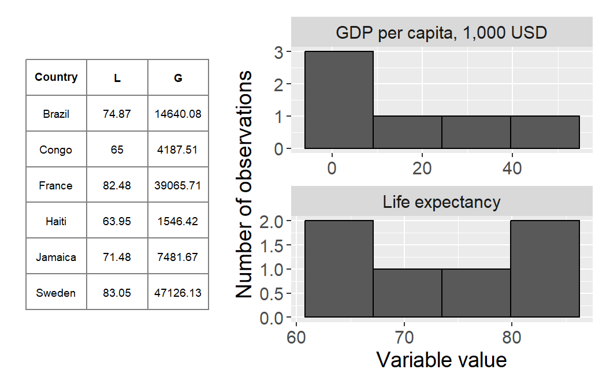
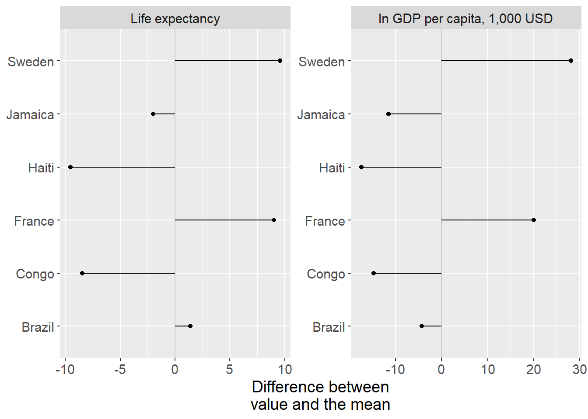
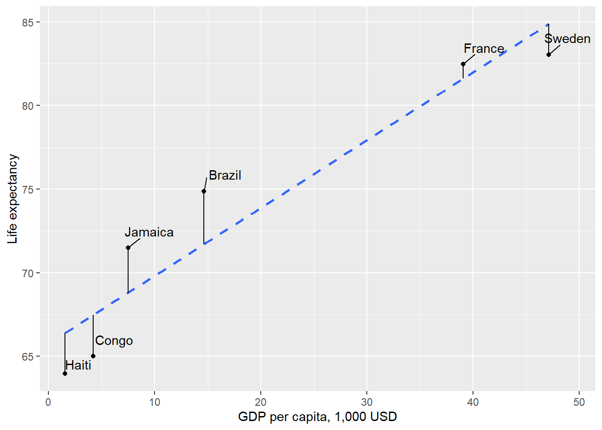
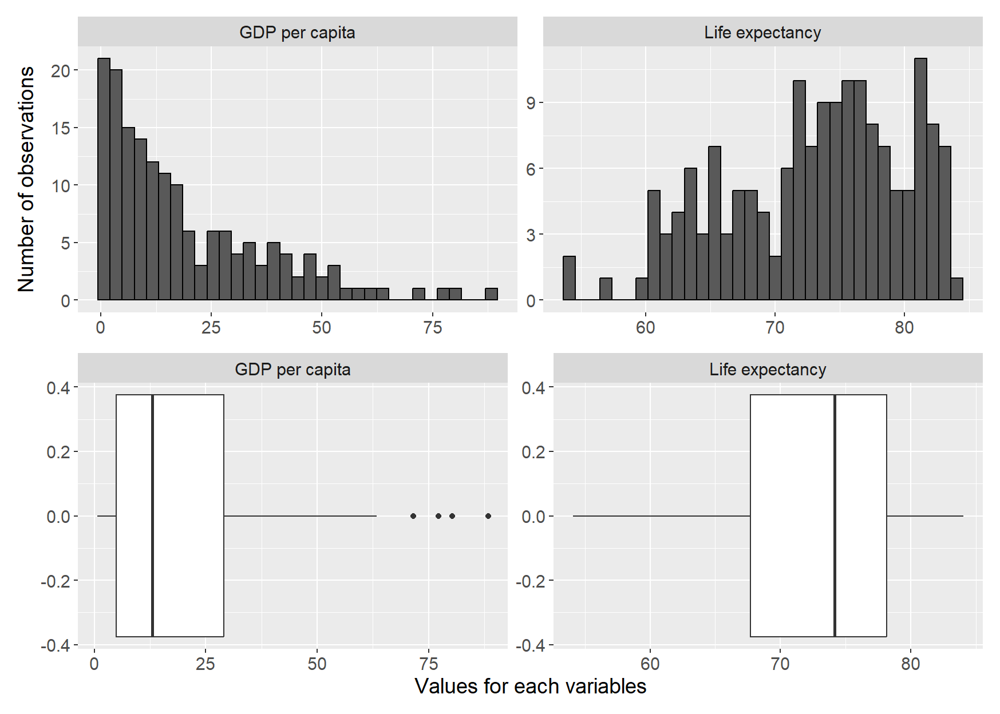
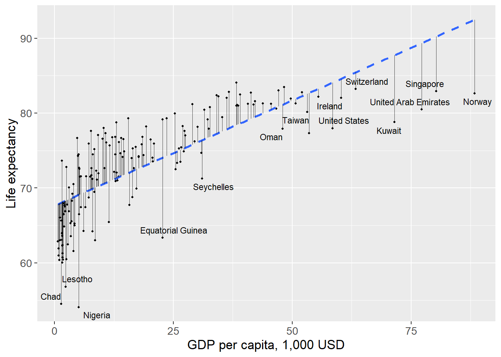
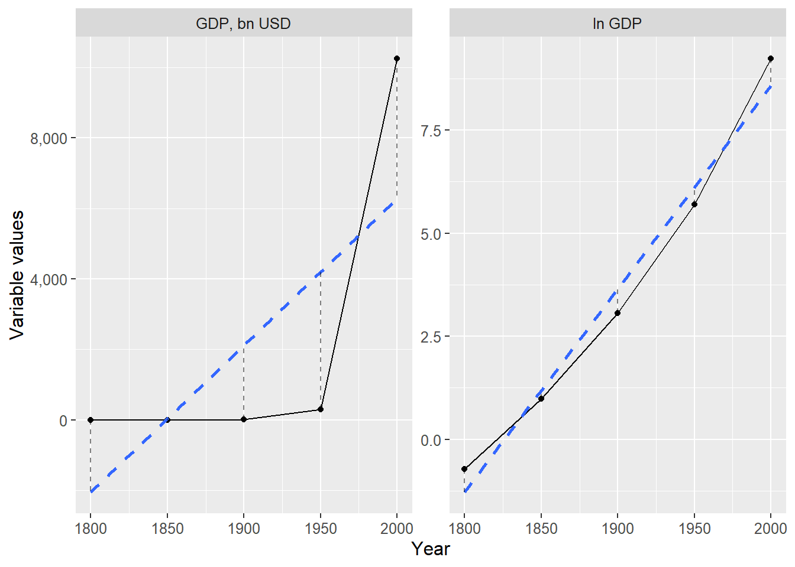
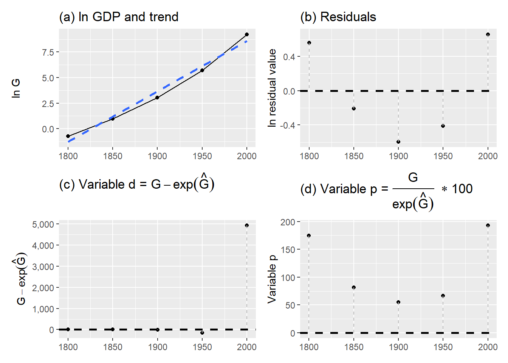
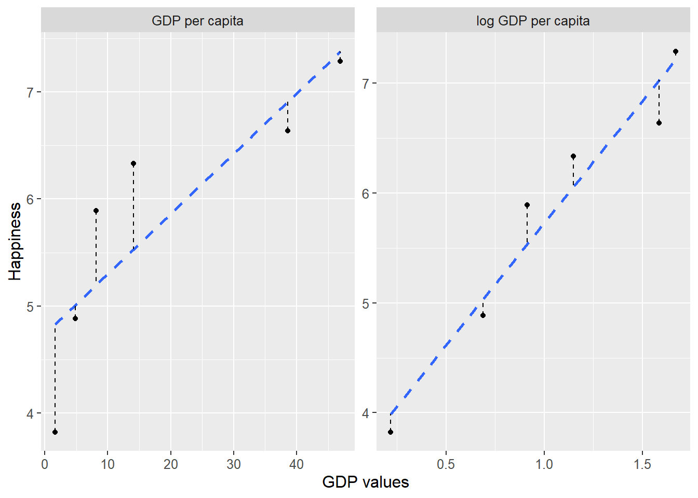

Chapter 18 Covariation in Social Science
This chapter reviews some simple examples of variation and covariation with social science data.
18.1 GDP and Life Expectancy in different countries
We have in previous examples discussed the relation between income and life expectancy. Now we shall compare average life expectancy with average income for inhabitants in a number of countries. The data used in this section are taken from the database www.ourworldindata.com, which has a lot of free data you can download and work with. We begin by comparing only a small number of countries. Figure 18.1 describes the data we shall use. In the table to the left are found the values for average life expectancy \(\left(\text{abbreviated }L\right)\) and GDP per capita, \(\left(G\right)\) for six selected countries in the year 2022.
To the right in the figure the variables’ frequency distribution, dispersion, is illustrated in two histograms. The upper graph shows income and the lower graph shows life expectancy. On the horizontal x-axis the values for each respective variable are shown. On the vertical y-axis the number of observations is shown. For each of the two variables, life expectancy and income, the observations are grouped in up to four bars.

Figure 18.1: GDP per capita and average life expectancy
Let us estimate variance (section 16.3 ) for each variable. Variance for the variable life expectancy \(\left(L\right)\):
\[ \begin{align} \text{var}\left(L\right)= & \frac{\sum_{i}\left(L_{i}-\bar{L}\right)^{2}}{n-1}=\frac{341.1156}{5}\approx68.22 \tag{18.1} \end{align} \]
where \(L_{i}-\bar{L}\) indicates the deviation from the mean for the variable life expectancy. Variance for GDP per capita, variable \(G\), is:
\[ \begin{align} \text{var}\left(G\right)= & \frac{\sum_{i}\left(G_{i}-\bar{G}\right)^{2}}{n-1}=373.886 \end{align} \]

Figure 18.2: Life expectancy and GDP per capita: difference to the mean
The results are illustrated in figure 18.2 with deviations from the mean, with life expectancy in the graph to the left and GDP per capita in the graph to the right.
Standard deviation for life expectancy \(L\) is:
\[ \begin{align} s_{L}=\sqrt{\text{var}\left(L\right)} & =\sqrt{\frac{\sum_{i}^{n}\left(L_{i}-\bar{L}\right)^{2}}{n-1}}\approx8.26 \end{align} \]
Standard deviation for income \(M\):
\[ \begin{align} s_{G}=\sqrt{\text{var}\left(G\right)} & =\sqrt{\frac{\sum_{i}^{n}\left(G_{i}-\bar{G}\right)^{2}}{n-1}}\approx19.336 \end{align} \]
The results show that life expectancy has a standard deviation of 0.98 years and average income has a standard deviation of 21.5. We have an idea that life expectancy and income can be expected to covary linearly, even though we do not have a theory about a causal relationship. We therefore estimate the covariance between the variables. Large parts of the calculation are found in table 18.2 :
\[ \begin{align} \text{cov}\left(L,G\right) & =\left(\frac{1}{n-1}\right)\sum_{i}\left(L_{i}-\bar{L}\right)\left(G_{i}-\bar{G}\right)\approx151.696 \tag{18.2} \end{align} \]
The result indicates a positive covariance, greater GDP is associated with on average higher average life expectancy. As was described in section 16.6 this measure is often difficult to interpret. We cannot assess whether the covariation we find should be regarded as high or low (strong or weak).
| Country | \(L_{i}\) | \(G_{i}\) | \(L_{i}-\bar{L}\) | \(G_{i}-\bar{G}\) | \(z_{L}\) | \(z_{G}\) |
|---|---|---|---|---|---|---|
| Brazil | 74.87 | 14.64 | 1.4 | -4.37 | 0.17 | -0.23 |
| Congo | 65 | 4.19 | -8.47 | -14.82 | -1.03 | -0.77 |
| France | 82.48 | 39.07 | 9 | 20.06 | 1.09 | 1.04 |
| Haiti | 63.95 | 1.55 | -9.52 | -17.46 | -1.15 | -0.9 |
| Jamaica | 71.48 | 7.48 | -1.99 | -11.53 | -0.24 | -0.6 |
| Sweden | 83.05 | 47.13 | 9.58 | 28.12 | 1.16 | 1.45 |
| Mean | 73.47 | 19.01 | ||||
| Standard deviation | 8.26 | 19.34 |
Note: Data from Our World in Data. GDP per capita adjusted for inflation and cost of living between countries. GDP shown in $1,000. All values rounded to second decimal.
Let us now calculate standardized values for life expectancy \(L\) and GDP \(G\), by dividing the difference to the mean by standard deviation. We call the standardized values of each respective variable \(z_{L}\) and \(z_{G}\). Table 18.1 describes the results.
The standardized values are easier to compare and already in the table we see that the variables display a tendency toward positive covariation: several observations whose values deviate negatively in variable \(z_{L}\) also deviate negatively in variable \(z_{G}\), and vice versa for several positive values. We also see that the standardized size of the deviations is of similar magnitude.
To estimate standardized covariance we use the measure correlation coefficient (Pearson’s r) which we defined in equation (16.12) as \(r_{XY}=\frac{\text{cov}\left(X,Y\right)}{s_{X}s_{Y}}\) where \(\text{cov}\left(X,Y\right)\) is estimated covariance between \(X\) and \(Y\), and \(s_{X}\) respectively \(s_{Y}\) are estimated standard deviation for each respective variable. The correlation coefficient \(r_{L,G}\) then becomes:
\[ \begin{align} r_{L,G} & =\frac{\text{cov}\left(L,G\right)}{s_{L}s_{G}}\approx0.9498 \end{align} \]
This result also indicates positive covariation, where higher life expectancy covaries with higher average income. As noted in section 16.7 the correlation coefficient \(r\) is also a difficult to interpret.
Now we shall estimate the covariation between \(L\) and \(G\) by using regression analysis and the least squares method. When we use regression analysis we must also determine which variable should be the explanatory variable, that is the variable that should be on the left side of the equals sign in our regression model. We decide to map to what extent variations in life expectancy \(L\) can be “explained” by the regression model and the explanatory variable average income \(G\). We cannot draw conclusions about causation, since we cannot be certain that there is not some other phenomenon that affects one or both variables in the model. We have the following regression model:
\[ \begin{equation} L=\alpha_{1}+\alpha_{2}G+e \tag{18.3} \end{equation} \]
where \(L\) is life expectancy, \(G\) is GDP, \(\alpha_{1}\) is the coefficient for y-intercept, \(\alpha_{2}\) is the slope coefficient and \(e\) is the error term. Based on the least squares method we shall now estimate \(\hat{\alpha_{1}}\) and \(\hat{\alpha_{2}}\). That we use Greek letters for the coefficients has no mathematical significance. In table 18.2 we have the calculations required to give us the slope coefficient \(\hat{\alpha}_{2}\):
\[ \begin{align} \hat{\alpha_{2}} & =\frac{\sum\left(G_{i}-\bar{G}\right)\left(L_{i}-\bar{L}\right)}{\sum\left(G_{i}-\bar{G}\right)^{2}}\approx\frac{758.48}{1869.41}\approx0.4057 \end{align} \]
This we use to estimate the y-intercept \(\hat{\alpha}_{1}\):
\[ \begin{align} \hat{\alpha_{1}} & =\bar{L}-\hat{\alpha_{2}}\bar{G}\approx73.47-0.4057*19.01\approx65.758 \end{align} \]
| \(L_{i}\) | \(G_{i}\) | \(\tilde{L}\) | \(\tilde{L}^{2}\) | \(\tilde{G}\) | \(\tilde{G}^{2}\) | \(\tilde{L}\tilde{G}\) | \(\hat{L_{i}}\) | \(\hat{e_{i}}\) | \(\hat{e_{i}}^{2}\) | \(L_{i}-\hat{L_{i}}\) | \(\left(L_{i}-\hat{L_{i}}\right)^{2}\) |
|---|---|---|---|---|---|---|---|---|---|---|---|
| 74.87 | 14.64 | 1.4 | 1.96 | -4.37 | 19.08 | -6.12 | 71.7 | 3.17 | 10.07 | 3.17 | 10.07 |
| 65 | 4.19 | -8.47 | 71.74 | -14.82 | 219.64 | 125.53 | 67.46 | -2.46 | 6.04 | -2.46 | 6.04 |
| 82.48 | 39.07 | 9 | 81.09 | 20.06 | 402.31 | 180.62 | 81.61 | 0.87 | 0.75 | 0.87 | 0.75 |
| 63.95 | 1.55 | -9.52 | 90.67 | -17.46 | 304.9 | 166.27 | 66.39 | -2.44 | 5.94 | -2.44 | 5.94 |
| 71.48 | 7.48 | -1.99 | 3.96 | -11.53 | 132.85 | 22.93 | 68.79 | 2.69 | 7.22 | 2.69 | 7.22 |
| 83.05 | 47.13 | 9.58 | 91.69 | 28.12 | 790.63 | 269.25 | 84.88 | -1.83 | 3.36 | -1.83 | 3.36 |
Note: \(\tilde{L}=L_{i}-\bar{L}\), \(\tilde{G}=G_{i}-\bar{G}\)
The result \(\hat{\alpha}_{2}=0.4057\) means that 1,000 USD higher GDP per capita on average coincides with approximately 0.4057 years longer average life expectancy (almost five months). Our y-intercept \(\hat{\alpha_{1}}\) equals 65.758, which can be interpreted as that if there had existed a country with zero GDP per capita \(\left(G_{i}=0\right)\) the average life expectancy there would have been 65.758 years. Let us now estimate predicted average life expectancy \(\hat{L_{i}}\) and the residuals \(\hat{e_{i}}\):
\[ \begin{align} \hat{L_{i}} & =\hat{\alpha_{1}}+\hat{\alpha_{2}}G_{i}\\ \hat{e_{i}} & =L_{i}-\hat{L_{i}}\nonumber \end{align} \]
The results are described in table 18.2 and illustrated in figure 18.3 . Please check that the table is correct. Next we estimate \(R^{2}\) for the regression model in equation (18.3) :
\[ \begin{align} R^{2} & =1-\frac{\sum_{i}\left(L_{i}-\hat{L_{i}}\right)^{2}}{\sum_{i}\left(L_{i}-\bar{L}\right)^{2}}\approx1-\frac{33.4}{341}\approx0.902 \end{align} \]
This indicates that approximately 90% of the variation in average life expectancy in these countries could be explained by the regression model and the variation in our explanatory variable, GDP per capita.

Figure 18.3: Linear covariation between life expectancy and GDP per capita for six countries
18.2 Covariation with a lot of countries
In the previous section we used a few observations for a smaller sample of countries. Now we shall do the corresponding calculation but use data on life expectancy and GDP per capita for 2022 for 164 countries. Table 18.3 lists some measures of central tendency and dispersion for the data we shall use now.
| GDP per capita, \(G\) | Life expectancy, \(L\) | |
|---|---|---|
| Minimum | 0.72 | 54.08 |
| Maximum | 88.37 | 84.05 |
| Mean | 19.11 | 73.01 |
| Median | 13.03 | 74.18 |
| Variance | 337.51 | 47.84 |
| Standard deviation | 18.37 | 6.92 |
| N = number of observations | 164 | 164 |
Note: Data from Our World in Data
We have previously used histograms to illustrate variables. Another type of graph that is often used to illustrate distribution of values is box plots, which are also called box-and-whisker plots. Now we shall compare the distribution of our two variables in histograms and box plots simultaneously.

Figure 18.4: Histograms and box plots for life expectancy and GDP per capita
Figure 18.4 illustrates the distribution of the two variables income and life expectancy for all countries. The upper graphs show histograms while the lower graphs are box plots. In the histogram for GDP, the upper graph to the left, we see how the distribution has a slightly longer “tail” upward, which arises because a few countries have unusually high GDP per capita, while the great majority are clustered around the distribution’s median and mean, to the left in the graph. In the histogram for life expectancy, upper graph to the right, we see that the values are somewhat more evenly distributed below and above the mean, which in turn means that the median and mean lie close to each other.
Also in the two box plots at the bottom of the figure we can read the mean at the line in the middle of the white boxes. The white rectangles’ left and right edges respectively are the first and third quartile, \(Q_{1}\) and \(Q_{3}\). The lines outside the rectangle mark 1.5 * the interquartile range, that is \(1.5*\left(Q_{3}-Q_{1}\right)\). The covariance between \(L\) and \(G\) is:
\[ \begin{equation} \text{cov}\left(L,G\right)\approx94.84 \end{equation} \]
Now we shall estimate the following regression model with data for all countries in the dataset:
\[ \begin{equation} L=\beta_{1}+\beta_{2}G+v \end{equation} \]
where \(v\) is the error term and \(\beta_{1}\) and \(\beta_{2}\) are the coefficients we estimate using the least squares method. Life expectancy \(L\) is a linear function of GDP per capita \(G\). The model thus has the same form as the one in equation (18.3) . The reason we now define the new coefficients \(\beta_{1}\) and \(\beta_{2}\) for the regression model is that we want to clarify that this is a different regression model than the previous one. Now we use more observations, which therefore by definition is a different collection of data than last time.
Although the mathematics with this many observations becomes relatively extensive to perform manually, by hand, this type of calculation takes less than a second for a computer. This time we get the following result for our regression model:
\[ \begin{align} L & =\hat{\beta}_{1}+\hat{\beta}_{2}G+v\approx67.645+0.281*G_{i}+v_{i} \end{align} \]
This also indicate a pretty strong positive correlation between GDP and life expectancy. The result is not that far from the results we found in the previous section when we only used data for a few countries. The regression result is illustrated in figure 18.5 where the regression line (the straight dashed line) between the points is calculated using the least squares method. In the graph the vertical distances between the points and the regression line are also drawn, which corresponds to the residuals. Note how we in the graph on an overview level can see how the observations for the two variables are distributed. A few points lie a bit further to the right in the picture, which corresponds to the countries with unusually high GDP.

Figure 18.5: Covariation between life expectancy and GDP per capita
We have now produced results for all countries in our dataset. This is large amounts of information and can seem like a powerful result. This is an example of an observational study where we observe the covariation that existed at a historical point in time between two phenomena. We could admittedly argue theoretically for why income could be thought to have a positive impact on life expectancy. Wealthy people have greater opportunity to live relaxed lives and enjoy various advantages that money brings. But few people would probably claim that it is the money itself that makes people with higher income live longer.
Regardless of the strength of this type of argument, our investigation says very little about the specific causal relationship, exactly how it works and how large an effect income has on life expectancy. Sometimes this type of objection matters less but sometimes they have great significance. It depends on what purpose our analysis has and what type of conclusions we hope to be able to draw. If we for example want to find an exact method for how people should live longer, we need to establish a more exact causal relationship and be able to measure its size. If we then want to implement a political measure, we also need to understand what other consequences our proposal will have on the world.
18.3 Linear trend over time
In section 5.9 we went through how we through logarithmic transformation of GDP can get a more linear picture of the development of the economy. Table 18.4 shows (once again) GDP for the US in billions USD (nominal values), and the same values in natural log, \(\ln\left(\text{GDP}\right)\)(compare table 3.8 ). In the table we use the abbreviations \(G\) for GDP and \(T\) for years. Values between 0 and 1 is negative in logarithmic form since \(\frac{1}{a^{2}}=a^{-2}\).
| Year \(T\) | GDP \(\left(G_{t}\right)\) | ln GDP \(\left(\ln G_{t}\right)\) |
|---|---|---|
| 1800 | 0.486 | -0.72 |
| 1850 | 2.656 | 0.9768 |
| 1900 | 21.197 | 3.05 |
| 1950 | 299.827 | 5.703 |
| 2000 | 10,250.952 | 9.235 |
| Row | \(G_{t}\) | \(T_{t}\) | \(\tilde{G}\) | \(\tilde{T}\) | \(\tilde{T}^{2}\) | \(\tilde{T}\tilde{G}\) | \(\ln G_{t}\) | \(\tilde{\ln G}\) | \(\tilde{T}\tilde{\ln G}\) |
|---|---|---|---|---|---|---|---|---|---|
| 1 | 0.486 | 1800 | -2,114.54 | \(-100\) | 10,000 | 211,453.76 | -0.72 | -4.37 | 437.1 |
| 2 | 2.656 | 1850 | -2,112.37 | \(-50\) | 2,500 | 105,618.38 | 0.9768 | -2.67 | 133.63 |
| 3 | 21.197 | 1900 | -2,093.83 | 0 | 0 | 0 | 3.05 | -0.596 | 0 |
| 4 | 299.83 | 1950 | -1,815.2 | 50 | 2,500 | -90,759.83 | 5.703 | 2.05 | 102.69 |
| 5 | 10,250.95 | 2000 | 8,135.93 | 100 | 10,000 | 813,592.84 | 9.235 | 5.586 | 558.56 |
| Mean | 2,115.02 | 1900 | |||||||
| Sum | 25,000 | 1,039,905.15 | 1,231.99 |
Note: \(\tilde{G}=G_{t}-\bar{G}\), \(\tilde{T}=T_{t}-\bar{T}\), \(\tilde{\ln G}=\ln G_{t}-\overline{\ln G}\), \(\tilde{T}\tilde{\ln G}=\left(T_{t}-\bar{T}\right)\left(\ln G_{t}-\overline{\ln G}\right)\)
Now we shall estimate the linear trend over time for GDP using regression analysis. We shall estimate two regression models and compare the results. One regression model where we use the variable \(G_{t}=\) GDP in billions USD in year \(t\) and one model with \(\ln G_{t}=\) natural logarithm of GDP. The explanatory variable in both models is time (years). In the first regression model we use the variable GDP as a function of the variable year:
\[ \begin{equation} G_{t}=\alpha_{1}+\alpha_{2}\text{year}_{t}+e_{t} \tag{18.4} \end{equation} \]
where \(\alpha_{1}\) and \(\alpha_{2}\) are coefficients we shall estimate using the least squares method and \(e_{t}\) is the error term. Note now that we use a linear model to describe a variable whose data is not particularly linear. In the table above the values for the variable \(G_{t}\) increase exponentially.
In the second regression model we use the natural log of GDP:
\[ \begin{equation} \ln G_{t}=\beta_{1}+\beta_{2}\text{year}_{t}+\epsilon_{t} \tag{18.5} \end{equation} \]
where \(\beta_{1}\) and \(\beta_{2}\) are coefficients, \(\epsilon_{t}\) is the error term. Note that even though we now use \(\ln b\) we still estimate the covariation against the variable year without logarithmic transformation of this variable. We use different letters to describe the coefficients in this model to clarify that these are two different regression models. We begin by estimating the first model in equation (18.4) . In table 18.5 the calculations we need to estimate \(\hat{\alpha}_{2}\) are described:
\[ \begin{align} \hat{\alpha_{2}} & =\frac{\sum\left(\text{year}_{t}-\bar{\text{year}}\right)\left(G_{t}-\bar{G}\right)}{\sum\left(\text{year}_{t}-\bar{\text{year}}\right)^{2}}=\frac{1,039,905.15}{25,000}=41.6 \tag{18.6} \end{align} \]
For \(\hat{\alpha}_{1}\) we get:
\[ \begin{align} \hat{\alpha_{1}} & =\bar{G}-\hat{\alpha_{2}}\bar{\text{year}}\approx2,115.0236-41.6\times1,900=-76,917.8 \end{align} \]
The slope coefficient indicates the average annual linear GDP growth between year 1800 and 2000 in the US. Our result thus indicate that GDP on average has increased by approximately \(41.6 billions per year. The result for the y-intercept\)_{1} \(indicates that in year zero GDP was minus\) 76,917.8 billion, which is impossible. This result comes from the use of a linear model to describe a development that is not linear.
For the second regression model, equation (18.5) with the natural log of GDP, we instead get the following result for \(\hat{\beta}_{2}\):
\[ \begin{align} \hat{\beta_{2}} & =\frac{\sum\left(\ln G_{t}-\bar{\ln G}\right)\left(\text{year}_{t}-\bar{\text{year}}\right)}{\sum\left(\ln G_{t}-\bar{\ln G}\right)^{2}}\approx\frac{1,231.986}{25,000}\approx0.04928 \end{align} \]
Estimation of \(\hat{\beta}_{1}\):
\[ \begin{align} \hat{\beta_{1}} & =\bar{\ln G}-\hat{\beta_{2}}\bar{\text{year}}\approx2,115.0236-0.04928\times1900\approx-89.98 \end{align} \]
Since we now use the natural log of GDP the estimated coefficient \(\hat{\beta_{2}}\) is an approximate measure of how the model estimates the annual percentage growth rate: \(0.04928\approx4.9\%\). The other coefficient, y-intercept \(\hat{\beta_{1}}\), gives us the level of ln GDP at year zero. To get the level in billions USD we now need to set \(-89.98\) as exponent on the number \(e\), which we calculate with the function \(\exp\left(\right)\), the anti-logarithm of the natural log:
\[ \begin{equation} \exp\left(\hat{\ln G_{t}}\right)=e^{\hat{\ln b_{t}}}=\hat{b_{t}} \end{equation} \]
For year zero we then get:
\[ \begin{align} \ln\left(\hat{G_{t}}\right) & =\hat{\beta_{1}}+\hat{\beta_{2}}\text{year}_{0}\\ \ln\left(\hat{G_{0}}\right) & =-89.98+0.04928\times0\nonumber \\ \ln\left(\hat{G_{0}}\right) & =-89.98\nonumber \end{align} \]
From this we see that our model estimates GDP year zero to:
\[ \begin{align} \text{GDP year zero } & =\exp\left(-89.98\right)=e^{-89.98}=\frac{1}{e^{89.98}}\text{ bn USD.} \end{align} \]
The number \(e^{89.98}\) is a high value, a bit over 1 duodecillion, a 1 followed by 39 zeros. This means that \(1/e^{89.98}\) is a very low value, close to 0. This is logically a more credible result than any negative number, which we estimated GDP to be in year 0 in the first regression model. What this exercise primarily illustrates is that the natural log of GDP has a more linear correlation with time, compared to GDP. But none of our estimates of GDP in year 0 should be taken particularly seriously. We use simple models and just a few observations to compare complex processes.
The slope coefficient for time in each respective regression model gives us the average growth rate for GDP, as well as the growth rate for the natural log of GDP. Results are shown in table 18.6 with predicted values (the regression lines) for each regression model, the variables \(\hat{G_{t}}\) and \(\hat{\ln G_{t}}\) as well as the residuals \(\hat{e_{t}}\) and \(\hat{\epsilon_{t}}\).
In the column furthest to the right we have \(\exp\left(\hat{\ln G_{t}}\right)\), the level of GDP that is predicted with the regression model that uses the natural log of GDP. Based on this we then calculate the sum of squared residuals. For the regression model \(G_{t}=\alpha_{1}+\alpha_{2}\text{year}_{t}+e_{t}\) we get:
\[ \begin{align} \sum_{t}\hat{e_{t}}^{2} & =39,549,636.76 \end{align} \]
For the regression model \(\ln G_{t}=\beta_{1}+\beta_{2}\text{year}_{t}+\epsilon_{t}\):
\[ \begin{align} \sum_{t}\hat{\epsilon_{t}}^{2} & \approx1.31 \end{align} \]
To convert the results for the natural log variable to billions of dollars we use the exponential function:
\[ \begin{equation} \exp\left(\sum_{t}\hat{\epsilon_{t}}^{2}\right)\approx\exp\left(1.31\right)\approx3.71 \end{equation} \]
As can be seen in table 18.6 the predicted results for \(\hat{G}_{t}\) from the regression model in equation (18.4) are further from observed GDP, \(G_{t}\), compared, to the difference between predicted values for \(\hat{\ln G_{t}}\)(from the regression model in equation (18.5) ). This is particularly clear for the lower values of GDP, during the 1800s.
| \(G_{t}\) | \(\text{year}_{t}\) | \(\hat{G}_{t}\) | \(\hat{e_{t}}\) | \(\ln G_{t}\) | \(\hat{\ln G_{t}}\) | \(\hat{\epsilon}_{t}\) | \(\exp\left(\hat{\ln G_{t}}\right)\) |
|---|---|---|---|---|---|---|---|
| 0.49 | 1800 | \(-2,044.6\) | 2,045.08 | \(-0.72\) | \(-1.28\) | 0.56 | 0.28 |
| 2.66 | 1850 | 35.21 | \(-32.56\) | 0.98 | 1.19 | \(-0.21\) | 3.27 |
| 21.2 | 1900 | 2,115.02 | \(-2,093.83\) | 3.05 | 3.65 | \(-0.6\) | 38.46 |
| 299.83 | 1950 | 4,194.83 | \(-3,895.01\) | 5.7 | 6.11 | \(-0.41\) | 451.9 |
| 10,250.95 | 2000 | 6,274.64 | 3,976.31 | 9.24 | 8.58 | 0.66 | 5,310.49 |
This we also see in the sums of the squared residuals. The higher value for \(\sum\hat{e_{t}}^{2}\) compared to \(\sum\hat{\epsilon}_{t}^{2}\) indicates that the total distance between the observations and the predicted values is larger in the first model, without logarithmic transformation, compared to in the second. The same thing is also seen in figure 18.6 where two graphs show GDP and the natural log of GDP, as well as the linear trend lines drawn using the models we estimated above. Just as our results indicate, the logarithmic values allow themselves to be better described with a linear regression model, compared to the non-logarithmic values.

Figure 18.6: GDP and ln GDP with their respective regression lines
18.4 Cycles and waves
In this section we will also compare GDP in the US over time. But instead of the explained variable or the coefficients, we are now interested in the residuals of the following regression model with the natural log of GDP as the explained variable:
\[ \begin{equation} \ln G_{t}=\beta_{1}+\beta_{2}\text{year}_{t}+\epsilon_{t} \end{equation} \]
For this regression model the residual \(\hat{\epsilon_{t}}\) indicates the difference between observed \(\ln G_{t}\) and estimated \(\hat{\ln G_{t}}\). In the previous section we estimated the coefficients for this regression model to \(\hat{\beta_{1}}=-89.98\) and \(\hat{\beta_{2}}=0.04928\). When we study economic development we are often interested in both the long-term trend and deviations from this trend. The deviation from the trend is in this case a measure of more short-term variation in GDP growth. This type of short-term variations has been the subject of great discussion within social science. In this case we measure deviations from the trend by observing the residuals.
Now we shall compare different deviations from estimated measures of long-term trend. This provides additional illustrations of the least squares method and how certain data lie closer to the predictions we estimate using a linear regression model. We have already estimated the residual \(\hat{\epsilon_{t}}=\ln G_{t}-\hat{\ln G_{t}}\). Now we want to calculate the deviation from trend in billions of USD, which we for year \(t\) call \(d_{t}\):
\[ \begin{align} d_{t} & =G_{t}-\exp\left(\hat{\ln G_{t}}\right)\\ & =G_{t}-e^{\hat{\ln G_{t}}}\nonumber \\ & =G_{t}-\hat{G}_{t}^{\text{from ln}}\nonumber \end{align} \]
The term \(G_{t}\) is GDP in billions USD. In the first row we use the exponential function \(\exp\left(\right)\) to set the logarithmic expression \(\hat{\ln G_{t}}\) as exponent with base \(e\), which gives us \(\hat{G}_{t}\). In the last row we mark this term with the text “from ln”, as a reminder that this predicted \(G_{t}\) is from the regression model with \(\ln G_{t}\). This gives us our first result.

Figure 18.7: GDP and deviations from trend
| \(\text{year}_{t}\) | \(G_{t}\) | \(\ln G_{t}\) | \(\hat{\ln G_{t}}\) | \(\exp\left(\hat{\ln G_{t}}\right)\) | \(\hat{\epsilon}_{t}\) | \(d_{t}\) | \(p_{t}\) |
|---|---|---|---|---|---|---|---|
| 1800 | 0.49 | \(-0.72\) | \(-1.28\) | 0.28 | 0.56 | 0.21 | 174.53 |
| 1850 | 2.66 | 0.98 | 1.19 | 3.27 | \(-0.21\) | \(-0.62\) | 81.16 |
| 1900 | 21.2 | 3.05 | 3.65 | 38.46 | \(-0.6\) | \(-17.26\) | 55.12 |
| 1950 | 299.83 | 5.7 | 6.11 | 451.9 | \(-0.41\) | \(-152.08\) | 66.35 |
| 2000 | 10,250.95 | 9.24 | 8.58 | 5,310.49 | 0.66 | 4,940.46 | 193.03 |
Next we shall calculate the deviation from trend as percent of GDP for each respective year. This gives us a relative measure of how deviations each respective year compared to trend. We call this variable \(p_{t}\):
\[ \begin{equation} p_{t}=\frac{G_{t}}{\exp\left(\hat{\ln G_{t}}\right)}\times100 \end{equation} \]
In most situations, all of these measures are not that interesting. This is mostly an exercise to illustrate different ways to look at data and thereby hopefully better understand the math behind our calculations. The results from our calculations are reported in table 18.7 and illustrated in four graphs in figure 18.7 . The upper left graph (a) shows the long-term trend in GDP growth estimated using the least squares method, which is the same as in figure 18.6 . Deviations from the trend are in graph (a) the residual \(\hat{e}_{t}\) in the regression model in equation (18.4) . The upper right graph (b) shows the deviations from this trend line where the vertical y-axis in the graph measures the value of the residuals \(\hat{\epsilon}_{t}\)(in logarithmic form). Put simply, the right graph is a rotated version of the left graph, so that the trend line is now horizontal. In graph (c), lower left, the deviation from trend is illustrated by variable \(d_{t}\), which measures differences between observations and the regression line in USD. In the lower right graph (d) we see deviation from trend as percent of GDP for the current year, variable \(p_{t}\).
18.5 Wealth and happiness
In section 5.10 we compared the covariation between self-assessed life satisfaction and GDP per capita. Table 18.8 repeats this data and now we will use this to estimate the covariation between these phenomena using two regression models. The first model:
\[ \begin{equation} H_{i}=\gamma_{1}+\gamma_{2}Y_{i}+e_{i} \tag{18.7} \end{equation} \]
where \(H_{i}\) is happiness in country \(i\), \(Y_{i}\) is GDP per capita, \(e_{i}\) is the error term and we shall estimate the two coefficients \(\gamma_{1}\) and \(\gamma_{2}\) using the least squares method. The second regression model:
\[ \begin{equation} H_{i}=\delta_{1}+\delta_{2}\log_{10}Y_{i}+\epsilon_{i} \tag{18.8} \end{equation} \]
where \(\ln Y_{i}\) is \(\log_{10}\left(\text{GDP per capita}\right)\), \(\epsilon_{t}\) is the error term and \(\delta_{1}\) and \(\delta_{2}\) are the coefficients we shall estimate. The results for the first model (equation (18.7) ):
\[ \begin{align} \hat{\gamma_{2}} & =\frac{\sum\left(H_{i}-\bar{H}\right)\left(Y_{i}-\bar{Y}\right)}{\sum\left(Y_{i}-\bar{Y}\right)^{2}}=0.05622\\ \hat{\gamma_{1}} & =\bar{H}-\hat{\gamma_{2}}\bar{Y}=4.7311\nonumber \end{align} \]
For the other model (equation (18.8) ) the results are:
\[ \begin{align} \hat{\delta_{2}} & =\frac{\sum\left(H_{i}-\bar{H}\right)\left(\log_{10}Y_{i}-\bar{\log_{10}Y}\right)}{\sum\left(\log_{10}Y_{i}-\bar{\log_{10}Y}\right)}=2.222\\ \hat{\delta_{1}} & =\bar{H}-\hat{\delta_{2}}\bar{\log_{10}Y}=3.503\nonumber \end{align} \]
This time we leave the details of the calculation as an exercise for the reader. If we focus on the slope coefficients see that according to the first model an increase in GDP per capita of 1,000 PPP USD is associated with on average around 0.056 higher self-assessed happiness. According to the second model one unit higher \(\log_{10}\) GDP per capita coincides with around 2.22 units higher life satisfaction. As can be seen in table 18.8 an increase of \(\log_{10}\) GDP per capita with one corresponds to almost a tenfold increase of GDP per capita, for example the approximate difference between Congo and Sweden or the difference between Haiti and Brazil.
| Country | Happiness, \(H\) | GDP per capita, \(Y\) | \(\log_{10}Y\) |
|---|---|---|---|
| Haiti | 3.824 | 1.653 | 0.218 |
| Congo | 4.884 | 4.881 | 0.689 |
| Jamaica | 5.89 | 8.194 | 0.913 |
| Brazil | 6.333 | 14.103 | 1.149 |
| France | 6.635 | 38.606 | 1.587 |
| Sweden | 7.287 | 46.949 | 1.672 |
Note: Data from Our World in Data, www.ourworldindata.org.

Figure 18.8: Happiness and GDP per capita
Let us also compare \(R^{2}\), how large a proportion of the variation in happiness can be explained by the variation of the explanatory variables \(Y\) respectively \(\log_{10}Y.\) For the first model we get:
\[ \begin{align} R_{\text{model 1}}^{2} & =1-\frac{\sum\left(H_{i}-\hat{H_{i}}\right)^{2}}{\sum\left(H_{i}-\bar{H}\right)^{2}}\approx0.719 \end{align} \]
For the other model:
\[ \begin{align} R_{\text{model 2}}^{2} & =1-\frac{\sum\left(H_{i}-\hat{H_{i}}\right)^{2}}{\sum\left(H_{i}-\bar{H}\right)^{2}}\approx0.948 \end{align} \]
According to this measure the first model explains about 72% of the variation in average happiness between countries. The second model explains about 95% of the variation in happiness between countries.
Figure 18.8 illustrates the data we used and the two regression models’ prediction lines. The result indicates that higher and relatively higher GDP covary with higher self-assessed life satisfaction, where we called the latter “happiness”. When we compare the covariation with relative income differences (log GDP) almost all variation in happiness can be explained by the variation in the explanatory variable log GDP per capita. A relatively higher measure of \(R^{2}\) means that the sum of the residuals is relatively smaller. This can also be seen in the graphs if we compare the distance between the points and the regression lines.
This is an observational study. For the same reasons as we discussed earlier we cannot draw any more detailed conclusions about causal effects from these results.
18.6 Star Wars
Statistical analysis is fundamentally a quantitative method. We use numbers to calculate new numbers. If we instead want to study other types of data, this needs to be quantified in some form and written with numbers. There are many situations where we may benefit from statistical analyses of data material that at first glance is not associated with statistics. Here follows a simple example as illustration.
| Film | Obi-Wan Kenobi | Anakin Skywalker/ Darth Vader | Luke Skywalker | Leia Organa | Chewbacca | Han Solo (alive) | R2-D2 |
|---|---|---|---|---|---|---|---|
| Star Wars 1 The Phantom Menace | 1 | 1 | 0 | 0 | 0 | 0 | 1 |
| Star Wars 2 Attack of the Clones | 1 | 1 | 0 | 0 | 0 | 0 | 1 |
| Star Wars 3 Revenge of the Sith | 1 | 1 | 1 | 1 | 1 | 0 | 1 |
| Star Wars 4 A New Hope | 1 | 1 | 1 | 1 | 1 | 1 | 1 |
| Star Wars 5 The Empire Strikes Back | 1 | 1 | 1 | 1 | 1 | 1 | 1 |
| Star Wars 6 Return of the Jedi | 1 | 1 | 1 | 1 | 1 | 1 | 1 |
| Star Wars 7 The Force Awakens | 0 | 0 | 1 | 1 | 1 | 1 | 1 |
| Star Wars 8 The Last Jedi | 0 | 0 | 1 | 1 | 1 | 0 | 1 |
| Star Wars 9 The Rise of Skywalker | 0 | 0 | 1 | 1 | 1 | 0 | 1 |
We shall now calculate to what extent some of the characters in Star Wars appear in the same films. Table 18.9 lists seven of the characters in their respective columns and nine of the films (the three trilogies, episodes 1–9) on their respective rows. In each cell the value 0 or 1 is shown depending on whether the character appeared in the film: 0 = does not appear, and 1 = appears. Of these characters the robot R2-D2 has been in the most films, all nine. We shall now estimate pairwise correlations, the covariation between two characters at a time. We have here 7 characters and can therefore estimate a total of 21 combinations, which we find using equation (2.12) from section 2.16 :
\[ \begin{align} \binom{n}{k} & =\frac{n!}{\left(n-k\right)!*k!}\\ & =\frac{7!}{\left(7-2\right)!2!}\nonumber \\ & =\frac{7*6*\cancel{5*4*3*2*1}}{\cancel{5*4*3*2*1}*2*1}\nonumber \\ & =21\nonumber \end{align} \]
We estimate pairwise correlation with the correlation coefficient (equation (16.12) ):
\[ \begin{equation} r_{xy}=\frac{\sum_{i}^{n}\left(x_{i}-\bar{x}\right)\left(y_{i}-\bar{y}\right)}{\left(\sum_{i}^{n}\left(x_{i}-\bar{x}\right)^{2}\right)^{1/2}\left(\sum_{i}^{n}\left(y_{i}-\bar{y}\right)^{2}\right)^{1/2}} \end{equation} \]
For this example we replace the variables \(x\) and \(y\) with two of the columns with zeros and ones in table 18.9 . We calculate a value for \(r_{xy}\) for each respective pair of characters, such as Obi-Wan Kenobi and Anakin Skywalker/Darth Vader and vice versa. If we call Obi-Wan Kenobi variable x and Anakin Skywalker/Darth Vader variable \(y\) the correlation coefficient becomes:
\[ \begin{align} \rho_{xy} & =\frac{\sum_{i}^{n}\left(x_{i}-\bar{x}\right)\left(y_{i}-\bar{y}\right)}{\left(\sum_{i}^{n}\left(x_{i}-\bar{x}\right)^{2}\right)^{1/2}\left(\sum_{i}\left(y_{i}-\bar{y}\right)^{2}\right)^{1/2}}=\frac{2}{2^{\frac{1}{2}+\frac{1}{2}}}=1 \end{align} \]
A correlation coefficient equal to 1 means maximum possible covariation. This we also see in the table. All films where Obi-Wan Kenobi appears also have Anakin Skywalker/Darth Vader. Let us calculate the correlation between Leia Organa, \(x\), and Han Solo, \(y\):
\[ \begin{align} \rho_{xy} & =\frac{\sum_{i}^{n}\left(x_{i}-\bar{x}\right)\left(y_{i}-\bar{y}\right)}{\left(\sum_{i}^{n}\left(x_{i}-\bar{x}\right)^{2}\right)^{1/2}\left(\sum_{i}\left(y_{i}-\bar{y}\right)^{2}\right)^{1/2}}\\ & \approx\frac{0.889}{\left(1.247\right)^{1/2}\left(1.491\right)^{1/2}}\nonumber \\ & \approx0.478\nonumber \end{align} \]
The correlation becomes in this case weaker, approximately 0.478. Leia appears in several films that Han is not in. As was described in section 16.7 it is difficult to interpret different results for the correlation coefficient more precisely. Despite this, this type of vague indication can be useful if we for example want a rough overview of how the different characters relate to each other. With more detailed information we could also do more detailed analysis, such as for example number of scenes where different characters appear simultaneously.
Hopefully this is an illustrative example of how statistical methods can be used even in situations that at first glance perhaps are not associated with statistics. In a similar way these methods and other types of calculations can be used to map patterns even in other types of data that are not quantified, such as for example texts. Pairwise correlations can for example give an overview of which words are used in different documents or in different sections in one and the same document. If one uses computers it is fast to do this type of estimations for large amounts of information, even if this requires millions of calculations.
18.7 Chapter summary
By estimating covariation between different phenomena we can discover important aspects of data. The least squares method can among other things be used to study to what extent life expectancy and income covary. A positive covariation indicates that longer life expectancy coincides with higher incomes.
The least squares method can also be used to estimate a linear trend over time, for example the average rate of change in the economy’s incomes.
Sometimes we may benefit from mapping patterns of covariation even in data that we perhaps do not spontaneously associate with statistical analysis, for example covariation between different words in texts or between the characters in the Star Wars films.